<!DOCTYPE lake>
<h2 data-lake-id="qebuP" id="qebuP"><span data-lake-id="u7f742327" id="u7f742327">功能需求</span></h2><ol list="uf8b5bcac"><li data-lake-id="uee87c7db" fid="ua14ff4f5" id="uee87c7db"><span data-lake-id="u54f0814d" id="u54f0814d">能够独自直立不倒，并且可以前行</span></li><li data-lake-id="u816e0417" fid="ua14ff4f5" id="u816e0417"><span data-lake-id="uedaeaa50" id="uedaeaa50">电池没电时，能够报警提示</span></li><li data-lake-id="u4253fb7d" fid="ua14ff4f5" id="u4253fb7d"><span data-lake-id="u3a8a6f77" id="u3a8a6f77">提供显示功能，可以显示一些信息</span></li><li data-lake-id="u0ba37b13" fid="ua14ff4f5" id="u0ba37b13"><span data-lake-id="u7db8dea0" id="u7db8dea0">提供用户接口，例如按键和开关等，方便用户控制</span></li><li data-lake-id="u4755c9eb" fid="ua14ff4f5" id="u4755c9eb"><span data-lake-id="u13116254" id="u13116254">提供蓝牙方案，方便无线操控</span></li></ol><p data-lake-id="u52744559" id="u52744559"><span data-lake-id="u59b5d975" id="u59b5d975">​</span><br/></p><h2 data-lake-id="hR6pP" id="hR6pP"><span data-lake-id="uf69ca4c8" id="uf69ca4c8">功能拆解</span></h2><h3 data-lake-id="AaBcY" id="AaBcY"><span data-lake-id="uc7e6266a" id="uc7e6266a">电机控制</span></h3><p data-lake-id="u55b4944f" id="u55b4944f"><span data-lake-id="u85c90582" id="u85c90582">需求中要求可以前行，当然需要用到电机。</span></p><h3 data-lake-id="nfpeC" id="nfpeC"><span data-lake-id="ucd86587a" id="ucd86587a">姿态控制</span></h3><p data-lake-id="u1ba4d0b2" id="u1ba4d0b2"><span data-lake-id="u0f5cf699" id="u0f5cf699">需求中要求前行并且不倒，那就需要实时掌握小车的姿态信息。</span></p><h3 data-lake-id="xreUi" id="xreUi"><span data-lake-id="u5eedf328" id="u5eedf328">供电</span></h3><p data-lake-id="u247b99a3" id="u247b99a3"><span data-lake-id="u22531bed" id="u22531bed">需求中需要独自运行，那就需要自行供电，需要进行电池管理。</span></p><h3 data-lake-id="eRO7A" id="eRO7A"><span data-lake-id="u3ce2b95d" id="u3ce2b95d">交互提示相关</span></h3><p data-lake-id="ue2e5021a" id="ue2e5021a"><span data-lake-id="u66e4afe4" id="u66e4afe4">需求中要求可以有报警音，可以有用户显示，可以有用户控制。</span></p><h3 data-lake-id="IMfHc" id="IMfHc"><span data-lake-id="u220b3eff" id="u220b3eff">蓝牙通讯</span></h3><p data-lake-id="u3e71ac59" id="u3e71ac59"><span data-lake-id="ua28c60d8" id="ua28c60d8">需求中要求可以无线操控</span></p><p data-lake-id="u072019cc" id="u072019cc"><span data-lake-id="ubdb34213" id="ubdb34213">​</span><br/></p><h2 data-lake-id="zO3iU" id="zO3iU"><span data-lake-id="u96ba2e61" id="u96ba2e61">原理图与器件选型</span></h2><h3 data-lake-id="K7xMF" id="K7xMF"><span data-lake-id="u90a6f0ad" id="u90a6f0ad">电机控制</span></h3><p data-lake-id="uba9b3d4f" id="uba9b3d4f"><span data-lake-id="u7d48f7e2" id="u7d48f7e2">包含需要的两个电机，以及控制电机转动的控制芯片。</span></p><h4 data-lake-id="i3ll8" id="i3ll8"><span data-lake-id="uaf9d4c8b" id="uaf9d4c8b">电机</span></h4><p data-lake-id="ud5dc97c4" id="ud5dc97c4"><span data-lake-id="u3e2e299a" id="u3e2e299a">电机我们采用N20电机，但是是包含编码器的。包含编码器的特点是，可以采样电机的转速，知道电机的速度；</span></p><p data-lake-id="u0e763756" id="u0e763756">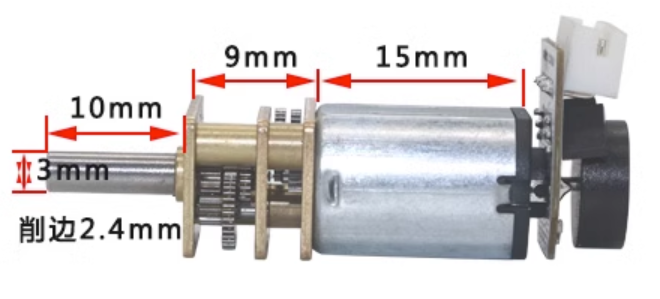</p><p data-lake-id="u9f402d96" id="u9f402d96"><span data-lake-id="udcf9070d" id="udcf9070d">接线方式如下：</span></p><p data-lake-id="u816099b2" id="u816099b2">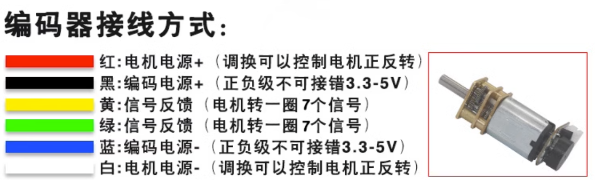</p><p data-lake-id="ua6102cb9" id="ua6102cb9">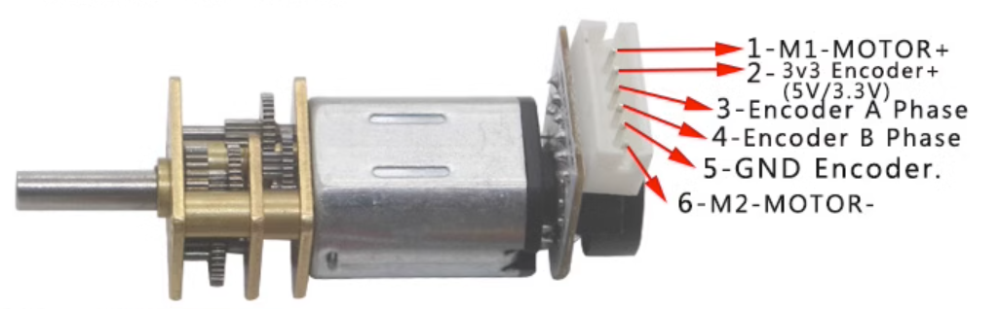</p><p data-lake-id="u7bee3dbd" id="u7bee3dbd"><span data-lake-id="uc9511e7e" id="uc9511e7e">接口线距如下：</span></p><p data-lake-id="u79c738b5" id="u79c738b5">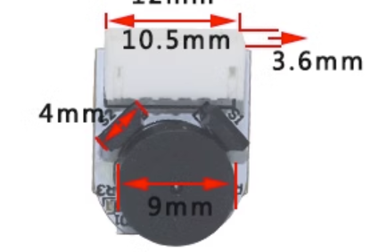</p><p data-lake-id="u4f54cf62" id="u4f54cf62"><span data-lake-id="u5a7f6ce4" id="u5a7f6ce4">6根针的接口，也就是有7个空挡，宽度是10.5，针的间距就是10.5/7 = 1.5mm.</span></p><p data-lake-id="u5d15033f" id="u5d15033f"><span data-lake-id="u1e11c353" id="u1e11c353">参考链接：</span><a data-lake-id="u66886201" href="https://item.taobao.com/item.htm?id=580556536472" id="u66886201" rel="noopener noreferrer" target="_blank"><span data-lake-id="uf97545bd" id="uf97545bd">https://item.taobao.com/item.htm?id=580556536472</span></a></p><p data-lake-id="ub118d1db" id="ub118d1db">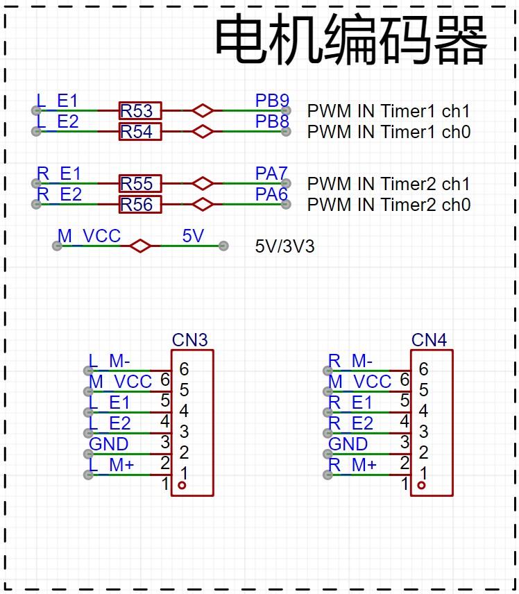</p><a class="yuque-card-link" href="https://zhuanlan.zhihu.com/p/599427257?utm_id=0" rel="noopener noreferrer" target="_blank">bookmarklink：bookmarklink</a><a class="yuque-card-link" href="https://www.renrendoc.com/paper/89812760.html" rel="noopener noreferrer" target="_blank">bookmarklink：bookmarklink</a><h4 data-lake-id="IpZzV" id="IpZzV"><span data-lake-id="uc2245f4c" id="uc2245f4c">驱动芯片</span></h4><p data-lake-id="ubb8355a7" id="ubb8355a7"><span data-lake-id="u91e52c56" id="u91e52c56">采用DRV8833。特点是，一个芯片，支持两个电机。</span></p><p data-lake-id="ub62bd6f5" id="ub62bd6f5"><span data-lake-id="ue7aa0048" id="ue7aa0048">参考链接： </span><a data-lake-id="uc89db2a1" href="https://item.szlcsc.com/3260521.html" id="uc89db2a1" rel="noopener noreferrer" target="_blank"><span data-lake-id="uaddd38e5" id="uaddd38e5">https://item.szlcsc.com/3260521.html</span></a></p><p data-lake-id="u1246c361" id="u1246c361">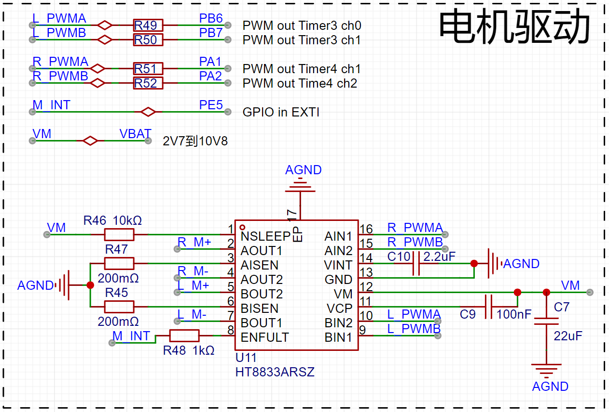</p><p data-lake-id="u8c734e8d" id="u8c734e8d">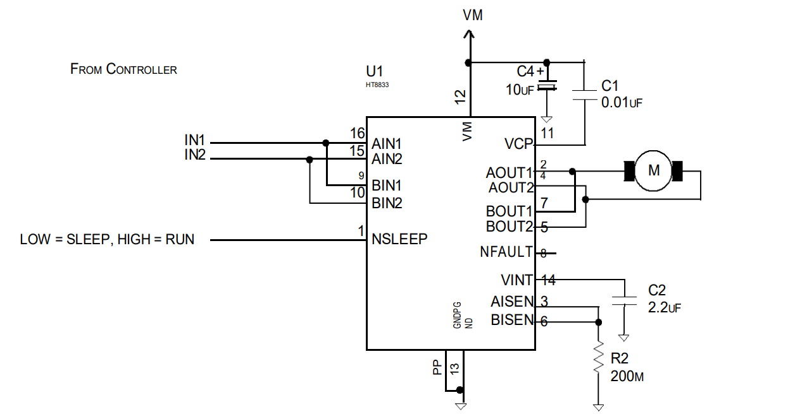</p><p data-lake-id="u66cb5fd4" id="u66cb5fd4"><a class="yuque-card-link" href="../../_assets/1b8d4df0ba440d3527837d00.pdf">C2928790_电机驱动芯片_HT8833ARSZ_规格书_HTCSEMI(海天芯)电机驱动芯片规格书.PDF</a></p><p data-lake-id="u057a933f" id="u057a933f"><br/></p><p data-lake-id="uc308e00f" id="uc308e00f"><span data-lake-id="u9ed16b5d" id="u9ed16b5d">​</span><br/></p><h3 data-lake-id="jsXX9" id="jsXX9"><span data-lake-id="ucc1a2904" id="ucc1a2904">姿态获取</span></h3><p data-lake-id="u0b19948d" id="u0b19948d"><span data-lake-id="u4cee4697" id="u4cee4697">平衡车需要平衡，就需要实时知道自己的姿态。我们采用姿态传感器，MPU6050。考虑到设计过程中外围电路等问题，我们采用了模组。</span></p><p data-lake-id="u0cc398b8" id="u0cc398b8"><span data-lake-id="ua11633df" id="ua11633df">参考链接：</span><a data-lake-id="uf937644c" href="https://item.taobao.com/item.htm?id=692900999965&amp;_u=p2a1bred668" id="uf937644c" rel="noopener noreferrer" target="_blank"><span data-lake-id="u51086539" id="u51086539">https://item.taobao.com/item.htm?id=692900999965&amp;_u=p2a1bred668</span></a></p><p data-lake-id="u48355da5" id="u48355da5"><span data-lake-id="u612e42ec" id="u612e42ec">这个模块通讯方式为I2C。</span></p><p data-lake-id="ufb204736" id="ufb204736">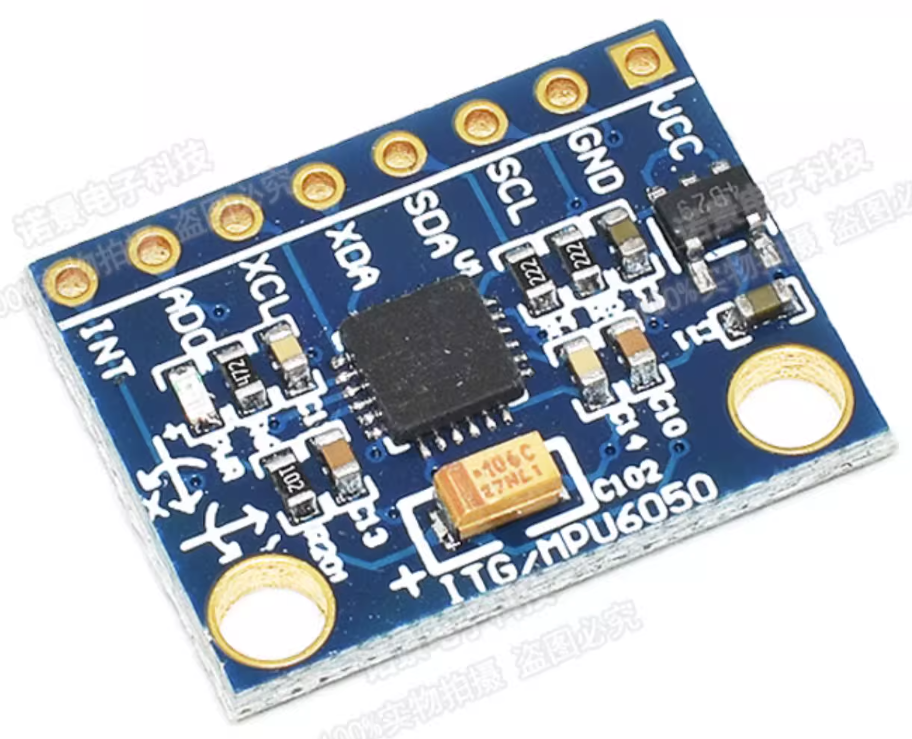</p><p data-lake-id="uc1b14fce" id="uc1b14fce">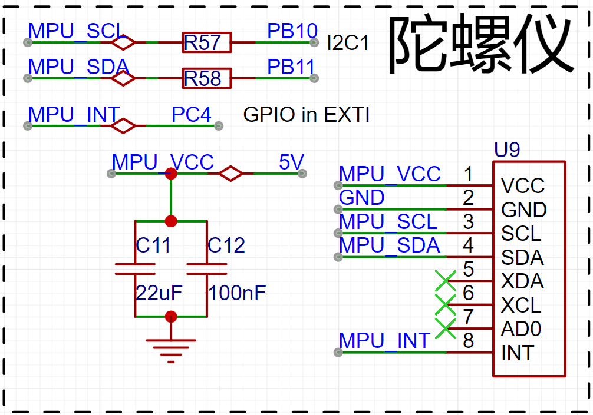</p><h3 data-lake-id="ZFgjz" id="ZFgjz"><span data-lake-id="u3e98a64a" id="u3e98a64a">蜂鸣器</span></h3><p data-lake-id="ufe52722e" id="ufe52722e"><span data-lake-id="u96ab1b09" id="u96ab1b09">可以选择有源蜂鸣器和无源蜂鸣器</span></p><p data-lake-id="u7d77b21e" id="u7d77b21e">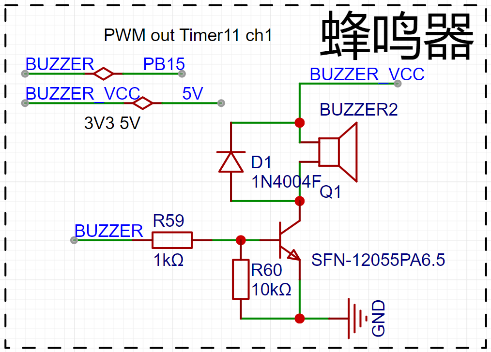</p><h3 data-lake-id="Z9hBr" id="Z9hBr"><span data-lake-id="uf897f1a2" id="uf897f1a2">蓝牙模块</span></h3><p data-lake-id="u3fe8f812" id="u3fe8f812"><span data-lake-id="u2995a2af" id="u2995a2af">采用蓝牙模块</span></p><p data-lake-id="ud4fbb9f0" id="ud4fbb9f0">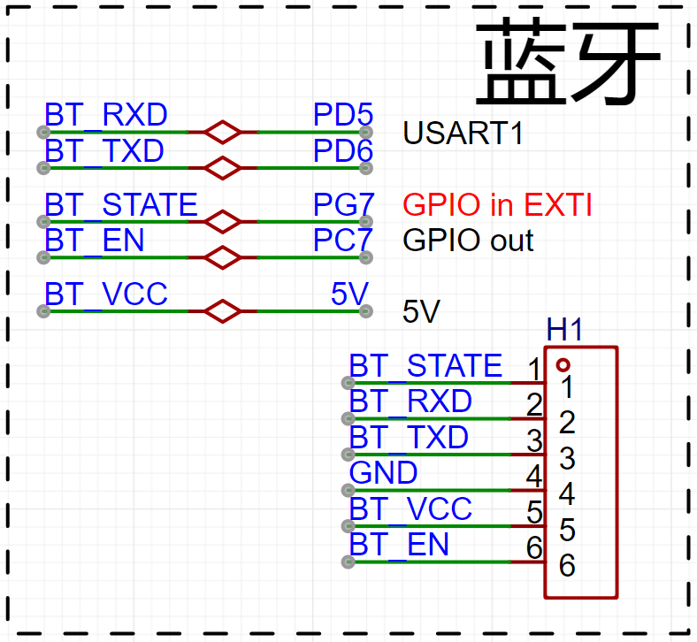</p><h3 data-lake-id="RRILj" id="RRILj"><span data-lake-id="ucc5cb054" id="ucc5cb054">电压检测</span></h3><p data-lake-id="u7c02e1bc" id="u7c02e1bc">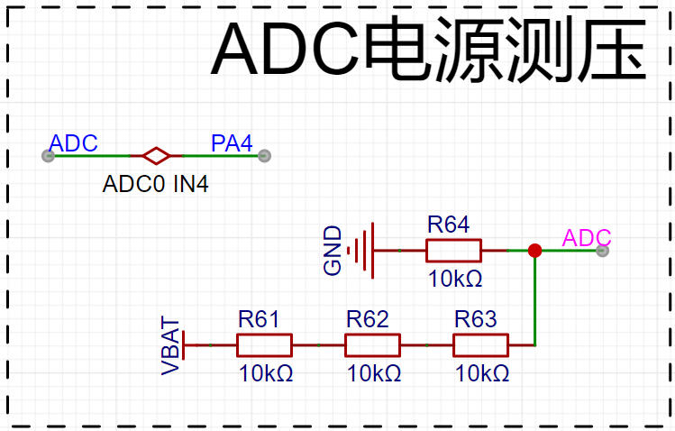</p><h3 data-lake-id="o9k0V" id="o9k0V"><span data-lake-id="u49c009a1" id="u49c009a1">OLED显示器</span></h3><p data-lake-id="u9cf38433" id="u9cf38433">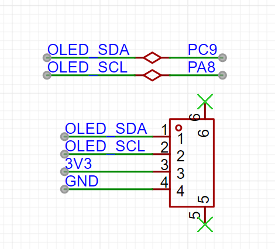</p><h3 data-lake-id="uhgtq" id="uhgtq"><span data-lake-id="u3c9d3eeb" id="u3c9d3eeb">外接用户按键</span></h3><p data-lake-id="uebda026c" id="uebda026c">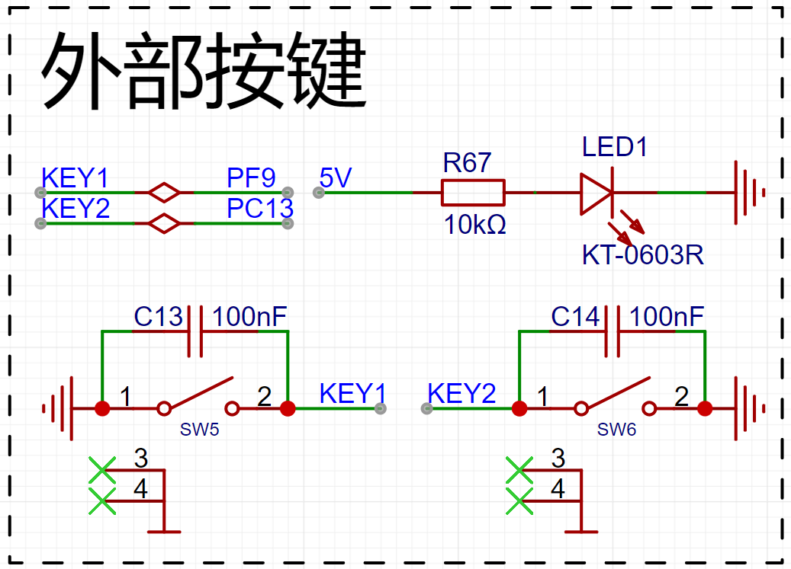</p><h3 data-lake-id="LL11e" id="LL11e"><span data-lake-id="u080a5e3f" id="u080a5e3f">外接电源供电</span></h3><p data-lake-id="u1c346ba7" id="u1c346ba7">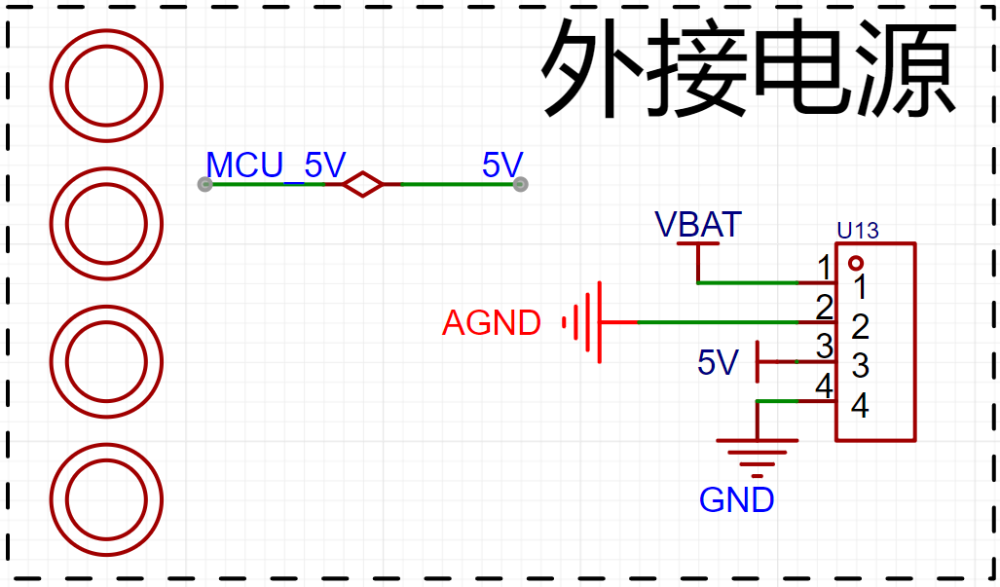</p><h2 data-lake-id="BE3ZG" id="BE3ZG"><span data-lake-id="ua08c407a" id="ua08c407a">引脚选择</span></h2><h3 data-lake-id="lk5sD" id="lk5sD"><span data-lake-id="ub9a09ed2" id="ub9a09ed2">电机接口</span></h3><ol list="u99963e65"><li data-lake-id="u2c4624c0" fid="u4c26fb7d" id="u2c4624c0"><span data-lake-id="u07ceb5f9" id="u07ceb5f9">可以控制电机</span></li></ol><table class="lake-table" data-lake-id="X0Khc" id="X0Khc" margin="true" style="width: 452px" width-mode="contain"><colgroup><col width="125"/><col width="120"/><col width="128"/><col width="79"/></colgroup><tbody><tr data-lake-id="u2a5cf81b" id="u2a5cf81b"><td data-lake-id="u20c344c9" id="u20c344c9" style="vertical-align: middle"><p data-lake-id="u2ffe07d4" id="u2ffe07d4" style="text-align: center"><span data-lake-id="uf76092a4" id="uf76092a4">控制</span></p></td><td data-lake-id="u744fee9f" id="u744fee9f" style="vertical-align: middle"><p data-lake-id="u60597910" id="u60597910" style="text-align: center"><span data-lake-id="u4575970a" id="u4575970a">功能</span></p></td><td data-lake-id="uf88fc1f5" id="uf88fc1f5" style="vertical-align: middle"><p data-lake-id="u5c3ced1b" id="u5c3ced1b" style="text-align: center"><span data-lake-id="u83332429" id="u83332429">功能选择</span></p></td><td data-lake-id="ub6fdae28" id="ub6fdae28" style="vertical-align: middle"><p data-lake-id="uea6e5c77" id="uea6e5c77" style="text-align: center"><span data-lake-id="ub5a67df6" id="ub5a67df6">引脚</span></p></td></tr><tr data-lake-id="u44e141b3" id="u44e141b3"><td data-lake-id="u40fe2728" id="u40fe2728" style="vertical-align: middle"><p data-lake-id="u4922ae35" id="u4922ae35" style="text-align: center"><span data-lake-id="u252c122e" id="u252c122e">左轮正转控制</span></p></td><td data-lake-id="u1ab41c95" id="u1ab41c95" rowspan="2" style="vertical-align: middle"><p data-lake-id="u8c106863" id="u8c106863" style="text-align: center"><span data-lake-id="ua1cf1d7b" id="ua1cf1d7b">PWM输出</span></p></td><td data-lake-id="ub95b4267" id="ub95b4267" style="vertical-align: middle"><p data-lake-id="u4eb5935c" id="u4eb5935c" style="text-align: center"><code data-lake-id="u7de5d1eb" id="u7de5d1eb"><span data-lake-id="ue3aa480f" id="ue3aa480f">Timer3</span></code><code data-lake-id="u4bb1efc8" id="u4bb1efc8"><span data-lake-id="u298376fb" id="u298376fb">CH0</span></code></p></td><td data-lake-id="u55675aba" id="u55675aba" style="vertical-align: middle"><p data-lake-id="ua6f3af7e" id="ua6f3af7e" style="text-align: center"><code data-lake-id="u329be62a" id="u329be62a"><span data-lake-id="u9cb6d8df" id="u9cb6d8df">PB6</span></code></p></td></tr><tr data-lake-id="u3077b4b6" id="u3077b4b6" style="height: 37px"><td data-lake-id="u26e0c499" id="u26e0c499" style="vertical-align: middle"><p data-lake-id="ue25d167b" id="ue25d167b" style="text-align: center"><span data-lake-id="ub7695c5c" id="ub7695c5c">左轮反转控制</span></p></td><td data-lake-id="u98677704" id="u98677704" style="vertical-align: middle"><p data-lake-id="u71241fe8" id="u71241fe8" style="text-align: center"><code data-lake-id="u55a9dff3" id="u55a9dff3"><span data-lake-id="u230c285c" id="u230c285c">Timer3</span></code><code data-lake-id="ud1918dd2" id="ud1918dd2"><span data-lake-id="ua375e932" id="ua375e932">CH1</span></code></p></td><td data-lake-id="u6fbc6797" id="u6fbc6797" style="vertical-align: middle"><p data-lake-id="u8c56685c" id="u8c56685c" style="text-align: center"><code data-lake-id="u0cf3549d" id="u0cf3549d"><span data-lake-id="u7e6ae70d" id="u7e6ae70d">PB7</span></code></p></td></tr><tr data-lake-id="u5774ec8e" id="u5774ec8e"><td data-lake-id="u49425604" id="u49425604" style="vertical-align: middle"><p data-lake-id="uddbd6a91" id="uddbd6a91" style="text-align: center"><span data-lake-id="u30c110d5" id="u30c110d5">右轮正转控制</span></p></td><td data-lake-id="u767a03be" id="u767a03be" rowspan="2" style="vertical-align: middle"><p data-lake-id="u8fd77e9d" id="u8fd77e9d" style="text-align: center"><span data-lake-id="u7d4b5712" id="u7d4b5712">PWM输出</span></p></td><td data-lake-id="u65241092" id="u65241092" style="vertical-align: middle"><p data-lake-id="u414881b8" id="u414881b8" style="text-align: center"><code data-lake-id="udc1a1feb" id="udc1a1feb"><span data-lake-id="u1dda9c80" id="u1dda9c80">Timer4</span></code><code data-lake-id="u3d0e0676" id="u3d0e0676"><span data-lake-id="u68af7176" id="u68af7176">CH1</span></code></p></td><td data-lake-id="u13f498a4" id="u13f498a4" style="vertical-align: middle"><p data-lake-id="u5a0528a1" id="u5a0528a1" style="text-align: center"><code data-lake-id="ud3373452" id="ud3373452"><span data-lake-id="ua4fccbc1" id="ua4fccbc1">PA1</span></code></p></td></tr><tr data-lake-id="uf9e299cf" id="uf9e299cf"><td data-lake-id="u65ba6d30" id="u65ba6d30" style="vertical-align: middle"><p data-lake-id="ub05e4dcb" id="ub05e4dcb" style="text-align: center"><span data-lake-id="u0390f70f" id="u0390f70f">右轮反转控制</span></p></td><td data-lake-id="u3249449d" id="u3249449d" style="vertical-align: middle"><p data-lake-id="u3f486e22" id="u3f486e22" style="text-align: center"><code data-lake-id="u336b5d1f" id="u336b5d1f"><span data-lake-id="u776acec9" id="u776acec9">Timer4</span></code><code data-lake-id="udd17b0fe" id="udd17b0fe"><span data-lake-id="uda48bf77" id="uda48bf77">CH2</span></code></p></td><td data-lake-id="u276c1c3d" id="u276c1c3d" style="vertical-align: middle"><p data-lake-id="uec51f599" id="uec51f599" style="text-align: center"><code data-lake-id="uec8877f7" id="uec8877f7"><span data-lake-id="u1832ae6e" id="u1832ae6e">PA2</span></code></p></td></tr></tbody></table><ol list="u47e19a82" start="2"><li data-lake-id="uaaa13bec" fid="uf9406826" id="uaaa13bec"><span data-lake-id="u9babb7fa" id="u9babb7fa">可以读取编码器</span></li></ol><table class="lake-table" data-lake-id="oJ1eP" id="oJ1eP" margin="true" style="width: 451px" width-mode="contain"><colgroup><col width="144"/><col width="96"/><col width="136"/><col width="75"/></colgroup><tbody><tr data-lake-id="u0b730d53" id="u0b730d53"><td data-lake-id="u9b5d5e8c" id="u9b5d5e8c" style="vertical-align: middle"><p data-lake-id="u9a35b0fe" id="u9a35b0fe" style="text-align: center"><span data-lake-id="u0ba7342e" id="u0ba7342e">采样</span></p></td><td data-lake-id="u8a541900" id="u8a541900" style="vertical-align: middle"><p data-lake-id="uf3209fed" id="uf3209fed" style="text-align: center"><span data-lake-id="u2acb9efa" id="u2acb9efa">功能</span></p></td><td data-lake-id="u9596a103" id="u9596a103" style="vertical-align: middle"><p data-lake-id="uf97923d3" id="uf97923d3" style="text-align: center"><span data-lake-id="uecdf397d" id="uecdf397d">功能选择</span></p></td><td data-lake-id="u6844e756" id="u6844e756" style="vertical-align: middle"><p data-lake-id="ud68f60f3" id="ud68f60f3" style="text-align: center"><span data-lake-id="u8141cb58" id="u8141cb58">引脚</span></p></td></tr><tr data-lake-id="ubfd206b4" id="ubfd206b4"><td data-lake-id="u03f21756" id="u03f21756" style="vertical-align: middle"><p data-lake-id="uaeb4f758" id="uaeb4f758" style="text-align: center"><span data-lake-id="u642aee3f" id="u642aee3f">左轮编码器1采样</span></p></td><td data-lake-id="u9a2a5ac7" id="u9a2a5ac7" rowspan="2" style="vertical-align: middle"><p data-lake-id="uae2cf608" id="uae2cf608" style="text-align: center"><span data-lake-id="u5b7f638a" id="u5b7f638a">PWM输入</span></p></td><td data-lake-id="uf9bf91ba" id="uf9bf91ba" style="vertical-align: middle"><p data-lake-id="u063790fb" id="u063790fb" style="text-align: center"><code data-lake-id="ua00ba95f" id="ua00ba95f"><span data-lake-id="u5871b8a3" id="u5871b8a3">Timer1</span></code><code data-lake-id="u1bcef99c" id="u1bcef99c"><span data-lake-id="u33048785" id="u33048785">CH0</span></code></p></td><td data-lake-id="ubb434d5a" id="ubb434d5a" style="vertical-align: middle"><p data-lake-id="uf8426ce0" id="uf8426ce0" style="text-align: center"><code data-lake-id="ud9bbc461" id="ud9bbc461"><span data-lake-id="u9ba191b6" id="u9ba191b6">PB8</span></code></p></td></tr><tr data-lake-id="u57191530" id="u57191530"><td data-lake-id="ud535df71" id="ud535df71" style="vertical-align: middle"><p data-lake-id="u0eb0278e" id="u0eb0278e" style="text-align: center"><span data-lake-id="u8c011395" id="u8c011395">左轮编码器2采样</span></p></td><td data-lake-id="udd7f8cef" id="udd7f8cef" style="vertical-align: middle"><p data-lake-id="u3151e18f" id="u3151e18f" style="text-align: center"><code data-lake-id="uc1a484a2" id="uc1a484a2"><span data-lake-id="u309973f7" id="u309973f7">Timer1</span></code><code data-lake-id="ue9b1ca97" id="ue9b1ca97"><span data-lake-id="u5368fb78" id="u5368fb78">CH1</span></code></p></td><td data-lake-id="u5b18d28d" id="u5b18d28d" style="vertical-align: middle"><p data-lake-id="u6829a5db" id="u6829a5db" style="text-align: center"><code data-lake-id="ucaf9f265" id="ucaf9f265"><span data-lake-id="uedb62451" id="uedb62451">PB9</span></code></p></td></tr><tr data-lake-id="u5f40ca9f" id="u5f40ca9f"><td data-lake-id="u489c4423" id="u489c4423" style="vertical-align: middle"><p data-lake-id="u20567754" id="u20567754" style="text-align: center"><span data-lake-id="u384e5b76" id="u384e5b76">右轮编码器1采样</span></p></td><td data-lake-id="u00e877c0" id="u00e877c0" rowspan="2" style="vertical-align: middle"><p data-lake-id="ue8e50d6d" id="ue8e50d6d" style="text-align: center"><span data-lake-id="udcf194b7" id="udcf194b7">PWM输入</span></p></td><td data-lake-id="u2cad001b" id="u2cad001b" style="vertical-align: middle"><p data-lake-id="u6b6a5ad0" id="u6b6a5ad0" style="text-align: center"><code data-lake-id="ucfa618c7" id="ucfa618c7"><span data-lake-id="u69966bf3" id="u69966bf3">Timer2</span></code><code data-lake-id="u59c7ce24" id="u59c7ce24"><span data-lake-id="u687bf9a8" id="u687bf9a8">CH0</span></code></p></td><td data-lake-id="ued73f213" id="ued73f213" style="vertical-align: middle"><p data-lake-id="u109d0352" id="u109d0352" style="text-align: center"><code data-lake-id="u645d7efa" id="u645d7efa"><span data-lake-id="u4f287f1b" id="u4f287f1b">PA6</span></code></p></td></tr><tr data-lake-id="u8d1db6f9" id="u8d1db6f9"><td data-lake-id="ue7e27cb6" id="ue7e27cb6" style="vertical-align: middle"><p data-lake-id="ucc336fee" id="ucc336fee" style="text-align: center"><span data-lake-id="u6f24c896" id="u6f24c896">右轮编码器2采样</span></p></td><td data-lake-id="uc56c44b3" id="uc56c44b3" style="vertical-align: middle"><p data-lake-id="u7d8b5dde" id="u7d8b5dde" style="text-align: center"><code data-lake-id="u8f032650" id="u8f032650"><span data-lake-id="u0fad3466" id="u0fad3466">Timer2</span></code><code data-lake-id="u9d04b640" id="u9d04b640"><span data-lake-id="u9808d485" id="u9808d485">CH1</span></code></p></td><td data-lake-id="u3c8b67ea" id="u3c8b67ea" style="vertical-align: middle"><p data-lake-id="ube7ea0c7" id="ube7ea0c7" style="text-align: center"><code data-lake-id="u346843e5" id="u346843e5"><span data-lake-id="u33bd0b8b" id="u33bd0b8b">PA7</span></code></p></td></tr></tbody></table><ol list="u93846ae1" start="3"><li data-lake-id="u259632b2" fid="u49e3a9bc" id="u259632b2"><span data-lake-id="ueace750f" id="ueace750f">过载反馈</span></li></ol><p data-lake-id="u9e5503da" id="u9e5503da"><span data-lake-id="uc7641219" id="uc7641219">普通IO输入即可。可以考虑到外部中断，此处IO选择</span><code data-lake-id="udcd4171a" id="udcd4171a"><span data-lake-id="u9bf1fa65" id="u9bf1fa65">PE5</span></code><span data-lake-id="u6c624f45" id="u6c624f45">，实际设计根据具体情况而定。</span></p><h3 data-lake-id="CCBwm" id="CCBwm"><span data-lake-id="ubd03d2a2" id="ubd03d2a2">陀螺仪</span></h3><ol list="ua0f5ca44"><li data-lake-id="u35bccc2e" fid="u55d89450" id="u35bccc2e"><span data-lake-id="ud5c8f4f2" id="ud5c8f4f2">通讯控制</span></li></ol><table class="lake-table" data-lake-id="JdtwG" id="JdtwG" margin="true" style="width: 224px" width-mode="contain"><colgroup><col width="73"/><col width="62"/><col width="89"/></colgroup><tbody><tr data-lake-id="u12a0be89" id="u12a0be89"><td data-lake-id="uaa3c1ad4" id="uaa3c1ad4" style="vertical-align: middle"><p data-lake-id="ucf16cb1e" id="ucf16cb1e" style="text-align: center"><span data-lake-id="u0eadbef5" id="u0eadbef5">通讯</span></p></td><td data-lake-id="uf93d4449" id="uf93d4449" style="vertical-align: middle"><p data-lake-id="uf1f1f93e" id="uf1f1f93e" style="text-align: center"><span data-lake-id="u1a3cfe09" id="u1a3cfe09">功能</span></p></td><td data-lake-id="u17724b15" id="u17724b15" style="vertical-align: middle"><p data-lake-id="ucc0c8aa2" id="ucc0c8aa2" style="text-align: center"><span data-lake-id="uf964e48a" id="uf964e48a">引脚</span></p></td></tr><tr data-lake-id="uf98ddccf" id="uf98ddccf"><td data-lake-id="ue9adfb7d" id="ue9adfb7d" style="vertical-align: middle"><p data-lake-id="ubdde85c5" id="ubdde85c5" style="text-align: center"><span data-lake-id="u3099b380" id="u3099b380">SCL</span></p></td><td data-lake-id="ueca4a463" id="ueca4a463" rowspan="2" style="vertical-align: middle"><p data-lake-id="u029cbfba" id="u029cbfba" style="text-align: center"><span data-lake-id="u93b027ff" id="u93b027ff">I2C1</span></p></td><td data-lake-id="u975c3791" id="u975c3791" style="vertical-align: middle"><p data-lake-id="u84ac6e15" id="u84ac6e15" style="text-align: center"><code data-lake-id="u116d3da7" id="u116d3da7"><span data-lake-id="udb4e6141" id="udb4e6141">PB10</span></code></p></td></tr><tr data-lake-id="u62cda01e" id="u62cda01e"><td data-lake-id="u82e7dd9e" id="u82e7dd9e" style="vertical-align: middle"><p data-lake-id="u3954d0c8" id="u3954d0c8" style="text-align: center"><span data-lake-id="u9ca35633" id="u9ca35633">SDA</span></p></td><td data-lake-id="u1e73a9f2" id="u1e73a9f2" style="vertical-align: middle"><p data-lake-id="ue7aedff2" id="ue7aedff2" style="text-align: center"><code data-lake-id="u0b6d1796" id="u0b6d1796"><span data-lake-id="u68919dfa" id="u68919dfa">PB11</span></code></p></td></tr></tbody></table><ol list="u5e6fac92" start="2"><li data-lake-id="ud1d2d25c" fid="ue51f85b4" id="ud1d2d25c"><span data-lake-id="u8d2bbd30" id="u8d2bbd30">反馈响应</span></li></ol><p data-lake-id="uf5a795f8" id="uf5a795f8"><span data-lake-id="u16d99a17" id="u16d99a17">普通IO输入即可。可以考虑到外部中断，此处IO选择</span><code data-lake-id="u103551f3" id="u103551f3"><span data-lake-id="u1f14c1d0" id="u1f14c1d0">PC4</span></code><span data-lake-id="uc8b29b1c" id="uc8b29b1c">，实际设计根据具体情况而定。</span></p><h3 data-lake-id="YMOrA" id="YMOrA"><span data-lake-id="u5bbaaa71" id="u5bbaaa71">OLED</span></h3><ol list="u13ff9858"><li data-lake-id="u5e48cac9" fid="u55d89450" id="u5e48cac9"><span data-lake-id="u03d5b1af" id="u03d5b1af">通讯控制</span></li></ol><table class="lake-table" data-lake-id="D8l3b" id="D8l3b" margin="true" style="width: 224px" width-mode="contain"><colgroup><col width="73"/><col width="62"/><col width="89"/></colgroup><tbody><tr data-lake-id="ue1de6c6b" id="ue1de6c6b"><td data-lake-id="ucb4b2ea7" id="ucb4b2ea7" style="vertical-align: middle"><p data-lake-id="ubce37999" id="ubce37999" style="text-align: center"><span data-lake-id="u3b6ad74e" id="u3b6ad74e">通讯</span></p></td><td data-lake-id="ubeaf0ef0" id="ubeaf0ef0" style="vertical-align: middle"><p data-lake-id="u7a7dfc52" id="u7a7dfc52" style="text-align: center"><span data-lake-id="uf4bd9111" id="uf4bd9111">功能</span></p></td><td data-lake-id="ucb3922c3" id="ucb3922c3" style="vertical-align: middle"><p data-lake-id="u34ffab7e" id="u34ffab7e" style="text-align: center"><span data-lake-id="uff6c920a" id="uff6c920a">引脚</span></p></td></tr><tr data-lake-id="u9ed33c2f" id="u9ed33c2f"><td data-lake-id="u312c1bc3" id="u312c1bc3" style="vertical-align: middle"><p data-lake-id="u18ab37cd" id="u18ab37cd" style="text-align: center"><span data-lake-id="u3ceafad3" id="u3ceafad3">SCL</span></p></td><td data-lake-id="udf3b0c97" id="udf3b0c97" rowspan="2" style="vertical-align: middle"><p data-lake-id="u1deb11d9" id="u1deb11d9" style="text-align: center"><span data-lake-id="ud67398a5" id="ud67398a5">I2C2</span></p></td><td data-lake-id="ucf9e5031" id="ucf9e5031" style="vertical-align: middle"><p data-lake-id="u39a998c3" id="u39a998c3" style="text-align: center"><code data-lake-id="uf8bc210e" id="uf8bc210e"><span data-lake-id="ud4642c69" id="ud4642c69">PC9</span></code></p></td></tr><tr data-lake-id="ufedb2d2a" id="ufedb2d2a"><td data-lake-id="u327d1c04" id="u327d1c04" style="vertical-align: middle"><p data-lake-id="ua36f7139" id="ua36f7139" style="text-align: center"><span data-lake-id="ua326a698" id="ua326a698">SDA</span></p></td><td data-lake-id="u1aad60cc" id="u1aad60cc" style="vertical-align: middle"><p data-lake-id="u2b685f0a" id="u2b685f0a" style="text-align: center"><code data-lake-id="ua67548c3" id="ua67548c3"><span data-lake-id="u0836fe90" id="u0836fe90">PA8</span></code></p></td></tr></tbody></table><h3 data-lake-id="aCARx" id="aCARx"><span data-lake-id="u7a45013b" id="u7a45013b">蓝牙</span></h3><ol list="u5ccc2863"><li data-lake-id="ud43d1bca" fid="u55d89450" id="ud43d1bca"><span data-lake-id="u04c59f3e" id="u04c59f3e">通讯控制</span></li></ol><table class="lake-table" data-lake-id="lHB49" id="lHB49" margin="true" style="width: 245px" width-mode="contain"><colgroup><col width="73"/><col width="83"/><col width="89"/></colgroup><tbody><tr data-lake-id="ub345623c" id="ub345623c"><td data-lake-id="u67289e2e" id="u67289e2e" style="vertical-align: middle"><p data-lake-id="u13f1e3ce" id="u13f1e3ce" style="text-align: center"><span data-lake-id="u8bf0fd44" id="u8bf0fd44">通讯</span></p></td><td data-lake-id="ubad56648" id="ubad56648" style="vertical-align: middle"><p data-lake-id="ua6786de9" id="ua6786de9" style="text-align: center"><span data-lake-id="uab99f6ff" id="uab99f6ff">功能</span></p></td><td data-lake-id="u564a2454" id="u564a2454" style="vertical-align: middle"><p data-lake-id="ubf49245e" id="ubf49245e" style="text-align: center"><span data-lake-id="ud9c2a0ff" id="ud9c2a0ff">引脚</span></p></td></tr><tr data-lake-id="u94d65563" id="u94d65563"><td data-lake-id="ub165dbf6" id="ub165dbf6" style="vertical-align: middle"><p data-lake-id="u670ad1a7" id="u670ad1a7" style="text-align: center"><span data-lake-id="u40566f2f" id="u40566f2f">TX</span></p></td><td data-lake-id="ue401d279" id="ue401d279" rowspan="2" style="vertical-align: middle"><p data-lake-id="ufd717c83" id="ufd717c83" style="text-align: center"><span data-lake-id="ua0eae04c" id="ua0eae04c">USART1</span></p></td><td data-lake-id="uc45a966a" id="uc45a966a" style="vertical-align: middle"><p data-lake-id="ud99c8f32" id="ud99c8f32" style="text-align: center"><code data-lake-id="u02c12760" id="u02c12760"><span data-lake-id="u922d5306" id="u922d5306">PD5</span></code></p></td></tr><tr data-lake-id="u42e1ccab" id="u42e1ccab"><td data-lake-id="u5c237a5b" id="u5c237a5b" style="vertical-align: middle"><p data-lake-id="u467aee0e" id="u467aee0e" style="text-align: center"><span data-lake-id="ub3974ed0" id="ub3974ed0">RX</span></p></td><td data-lake-id="u191e7458" id="u191e7458" style="vertical-align: middle"><p data-lake-id="uf8fc7bc0" id="uf8fc7bc0" style="text-align: center"><code data-lake-id="ufbbf191e" id="ufbbf191e"><span data-lake-id="u492c791f" id="u492c791f">PD6</span></code></p></td></tr></tbody></table><ol list="u2d8dd140" start="2"><li data-lake-id="u92102385" fid="ue51f85b4" id="u92102385"><span data-lake-id="uc255034d" id="uc255034d">蓝牙状态反馈</span></li></ol><p data-lake-id="u3cdeb77f" id="u3cdeb77f"><span data-lake-id="ua740a715" id="ua740a715">普通IO输入即可。可以考虑到外部中断，此处IO选择</span><code data-lake-id="u23cadf29" id="u23cadf29"><span data-lake-id="u4679f424" id="u4679f424">PG7</span></code><span data-lake-id="u7b48ba62" id="u7b48ba62">，实际设计根据具体情况而定。</span></p><ol list="ua95129c4" start="3"><li data-lake-id="uf5ccb99b" fid="u91c56eb7" id="uf5ccb99b"><span data-lake-id="u5f108516" id="u5f108516">蓝牙开关控制</span></li></ol><p data-lake-id="u524ae8e5" id="u524ae8e5"><span data-lake-id="u922f4448" id="u922f4448">普通IO输出即可。此处采用</span><code data-lake-id="u38d73218" id="u38d73218"><span data-lake-id="u70b2294e" id="u70b2294e">PC7</span></code><span data-lake-id="u5c73cc9c" id="u5c73cc9c">，实际设计根据具体情况而定。</span></p><p data-lake-id="u9d25eaa7" id="u9d25eaa7"><span data-lake-id="u89804492" id="u89804492">​</span><br/></p><h3 data-lake-id="hGOmy" id="hGOmy"><span data-lake-id="ua5166cb8" id="ua5166cb8">蜂鸣器</span></h3><ol list="u5064cc29"><li data-lake-id="u1f1e4b59" fid="u82c37c8d" id="u1f1e4b59"><span data-lake-id="ud1f17758" id="ud1f17758">声音控制</span></li></ol><p data-lake-id="u8b009948" id="u8b009948"><span data-lake-id="uf5958cec" id="uf5958cec">pwm或者非pwm，可以进行无源和有源蜂鸣器选择。此处采用</span><code data-lake-id="u772bc60a" id="u772bc60a"><span data-lake-id="u707568be" id="u707568be">PB15</span></code><span data-lake-id="u35f80949" id="u35f80949">，可以是普通IO，也可以是pwm控制的IO。</span><code data-lake-id="ua21a12ab" id="ua21a12ab"><span data-lake-id="u1d53d5fc" id="u1d53d5fc">Timer11</span></code><code data-lake-id="u296a29e8" id="u296a29e8"><span data-lake-id="ud702ee22" id="ud702ee22">ch1</span></code></p><p data-lake-id="uf4329877" id="uf4329877"><br/></p><h3 data-lake-id="FTrzF" id="FTrzF"><span data-lake-id="u62231838" id="u62231838">ADC电压采样</span></h3><ol list="ub4fe1918"><li data-lake-id="ude9a1c61" fid="u11bdb86a" id="ude9a1c61"><span data-lake-id="u38090b0e" id="u38090b0e">采用ADC引脚。此处采用</span><code data-lake-id="u6c3bdcc3" id="u6c3bdcc3"><span data-lake-id="ub5f5a7a7" id="ub5f5a7a7">PA4</span></code><span data-lake-id="ua2db5e3b" id="ua2db5e3b">,为</span><code data-lake-id="u66a79920" id="u66a79920"><span data-lake-id="ua34473b1" id="ua34473b1">ADC0</span></code><code data-lake-id="u5a204d4b" id="u5a204d4b"><span data-lake-id="uf234bf12" id="uf234bf12">IN4</span></code></li></ol><h3 data-lake-id="I2XiW" id="I2XiW"><span data-lake-id="ua30b4be1" id="ua30b4be1">按键</span></h3><ol list="u91bcdb5f"><li data-lake-id="ua6dc4e61" fid="u710ceac0" id="ua6dc4e61"><span data-lake-id="u775c7faa" id="u775c7faa">按键控制为输入</span></li></ol><p data-lake-id="u8e1cbc56" id="u8e1cbc56"><span data-lake-id="uca96d0dc" id="uca96d0dc">普通IO输入即可。可以考虑到外部中断，此处IO选择</span><code data-lake-id="u1a37e963" id="u1a37e963"><span data-lake-id="u72dd7f0d" id="u72dd7f0d">PF9</span></code><span data-lake-id="u908c5088" id="u908c5088">和</span><code data-lake-id="u499a3bfc" id="u499a3bfc"><span data-lake-id="u7ee7851d" id="u7ee7851d">PC13</span></code><span data-lake-id="uedc4bd55" id="uedc4bd55">，实际设计根据具体情况而定。</span></p><p data-lake-id="u7e7d1295" id="u7e7d1295"><br/></p><h2 data-lake-id="DOv0f" id="DOv0f"><span data-lake-id="u55b5ad0f" id="u55b5ad0f">完整原理图</span></h2><p data-lake-id="uea96842f" id="uea96842f"></p><h2 data-lake-id="OY1fc" id="OY1fc"><span data-lake-id="uec3f6b04" id="uec3f6b04">成品效果</span></h2><p data-lake-id="u3d54f12a" id="u3d54f12a">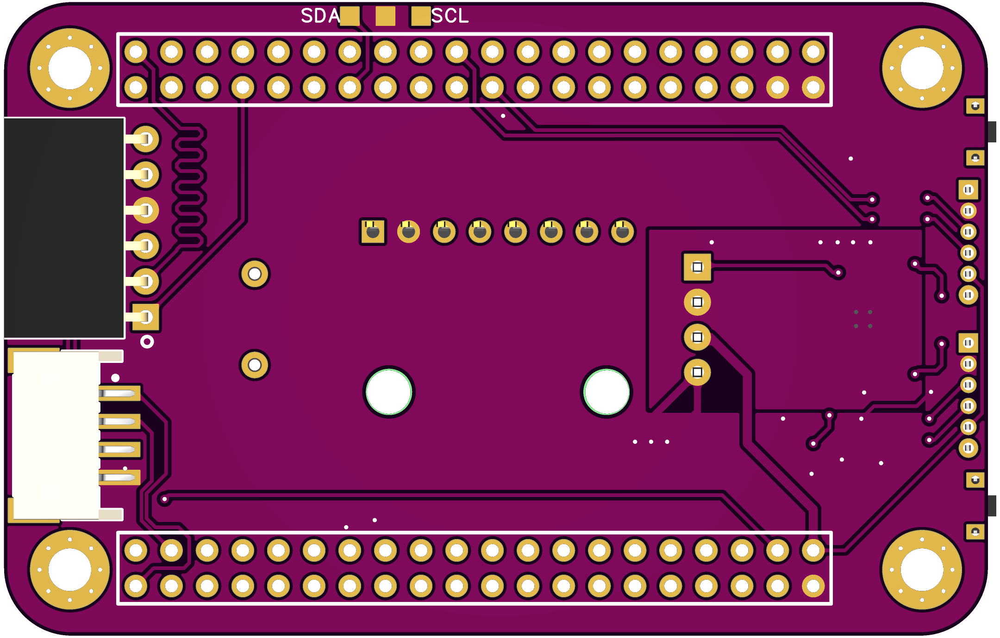</p><p data-lake-id="u9edef1f0" id="u9edef1f0">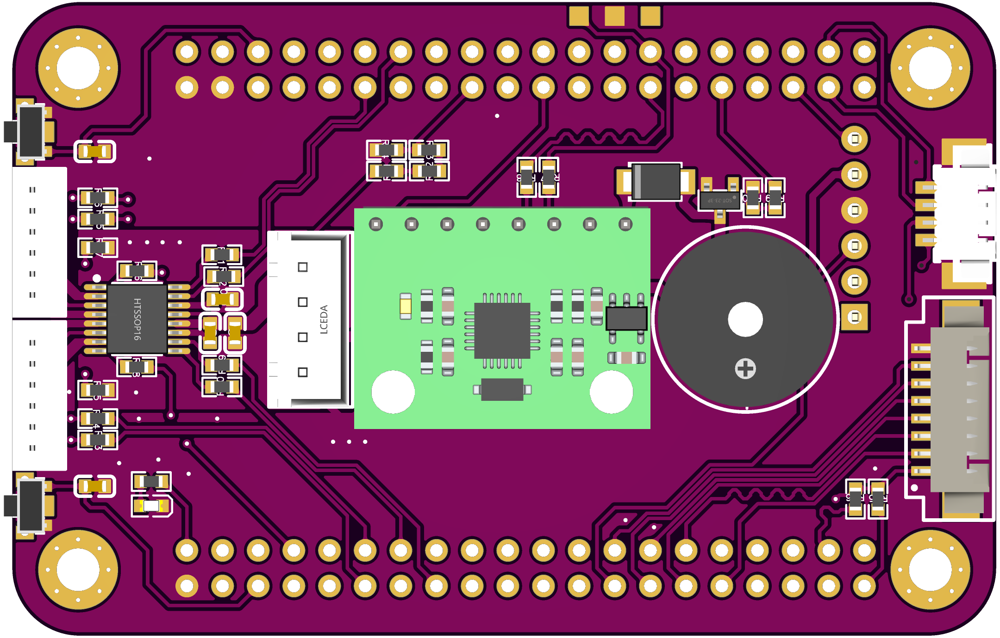</p><p data-lake-id="u12af8b82" id="u12af8b82">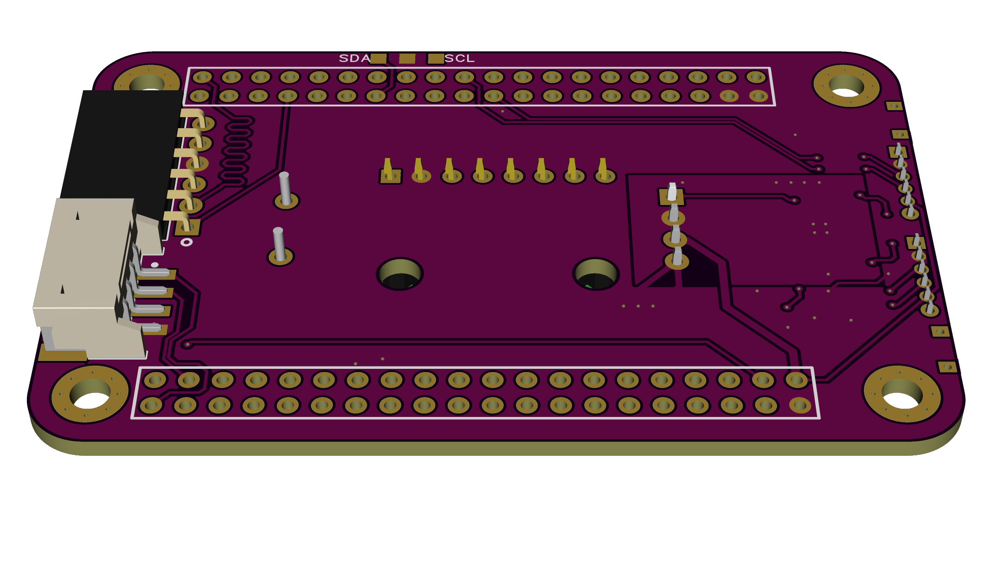</p><p data-lake-id="ub19337dc" id="ub19337dc">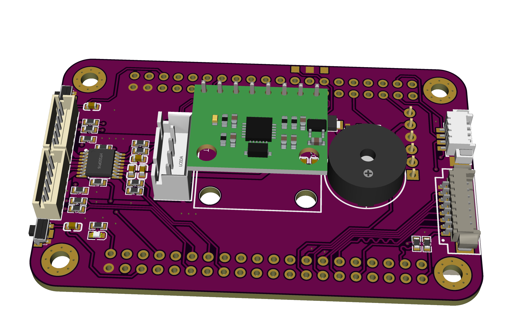</p><p data-lake-id="u00cf8c4c" id="u00cf8c4c">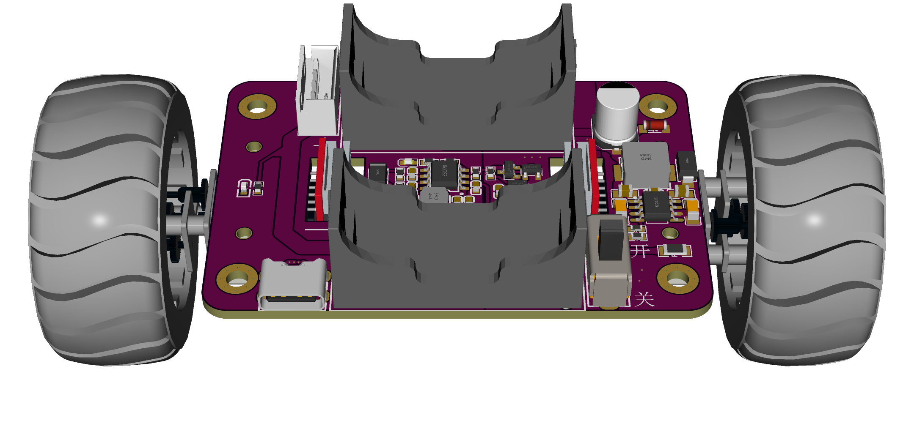</p><p data-lake-id="u98034092" id="u98034092">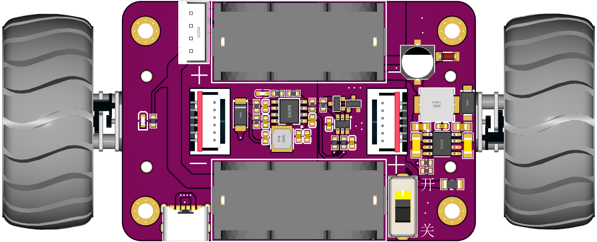</p><p data-lake-id="u2610e8af" id="u2610e8af">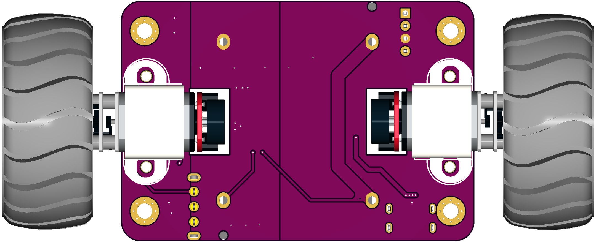</p>